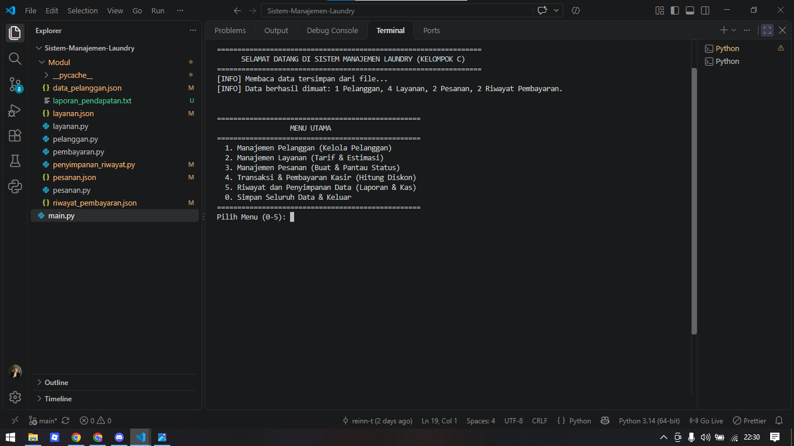
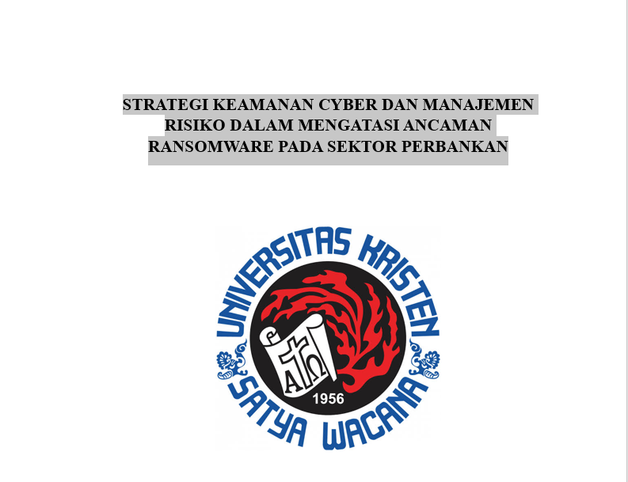
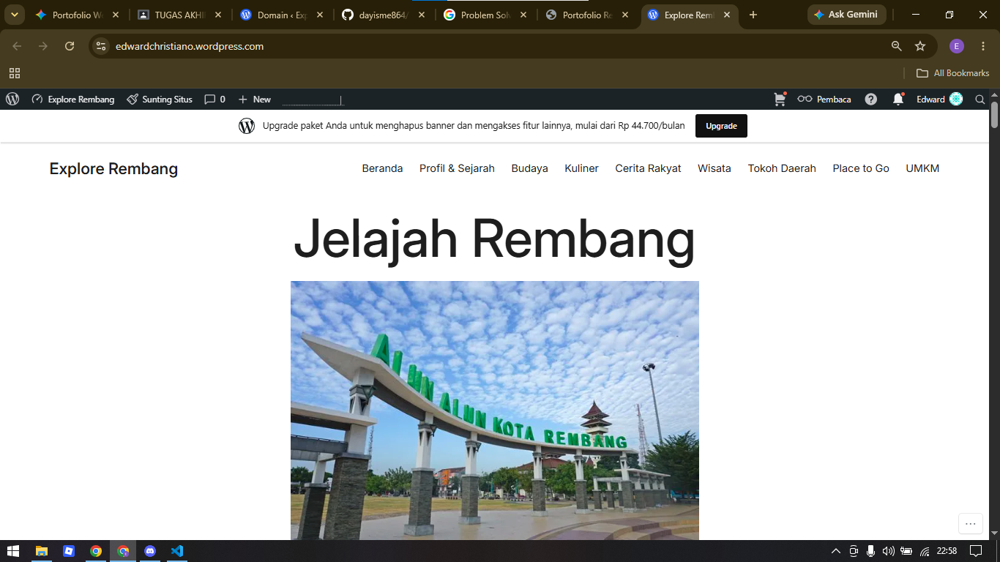

Halo, Saya Winfrey Edward Christiano
Fokus pada Web Development — membangun antarmuka web yang bersih, responsif, dan fungsional.
Tentang Diri & Keahlian
Mengenal latar belakang akademik, minat teknologi, serta perangkat yang saya gunakan.
Profil Singkat
Saya adalah mahasiswa Program Studi Sistem Informasi dengan ketertarikan mendalam pada pengembangan gim kasual serta aplikasi praktis untuk membantu kebutuhan sehari-hari.
Saat ini saya berfokus mengasah dasar-dasar pengembangan web melalui praktikum Pengantar Teknologi Informasi, sembari menerapkan alur kerja kolaboratif menggunakan Git dan GitHub untuk setiap proyek yang saya buat.
Keahlian & Tools
Teknologi yang sedang dikuasai dan dipelajari:
Galeri Proyek & Karya
Beberapa hasil praktikum, desain antarmuka, dan eksplorasi kode yang telah saya kerjakan.

Sistem Manajemen Laundry
Merancang sistem manajemen laundry yang mudah diakses dengan menggunakan terminal.

Makalah Cyber Security
Menyusun makalah dengan judul STRATEGI KEAMANAN CYBER DAN MANAJEMEN RISIKO DALAM MENGATASI ANCAMAN RANSOMWARE PADA SEKTOR PERBANKAN yang dibuat berdasarkan analisis literatur.

Portal Informasi & Wisata Kota Rembang
Pengembangan website berbasis WordPress yang menyajikan informasi lengkap seputar destinasi wisata, budaya, kuliner khas, dan profil daerah Kabupaten Rembang.
Riwayat Pendidikan
Catatan riwayat pendidikan dari sd hingga kuliah.